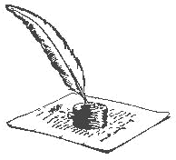
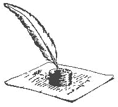

"I know", she thought, "I shall become a slut and make bagfuls of money. I can use the money to hire an assassin to murder mommy,the controlling witch"!! Then I can move to Bosnia for some peace and quiet!"
The author comments, " ah,art , my muse"
 Beverly, huddled under the bleachers, sniffed back a tear. Kicked off the
cheerleading squad! All of her mother's dreams for her, dashed! How could she
even go home now?
Beverly, huddled under the bleachers, sniffed back a tear. Kicked off the
cheerleading squad! All of her mother's dreams for her, dashed! How could she
even go home now?
"Well, screw my mom!" Bev thought to herself. She had bigger ambitions in mind than the cheerleading squad anyway. She had only joined in the first place to keep her mother from bitching and to get a little play from the football team. And now she had been kicked off! For grades, nonetheless! What the hell did grades have to do with high school? That didn't change the fact that she didn't want to go home, however. She REALLY didn't want to go home...Because Beverly lived on HORROR STREET.
No one was answering!
"Nooooooo, my sweet little cheerleader...your mother is ....indisposed."
"AAAAAAAAArrrrrrrgggggghhhhhh!" Beverly screamed. What was that creeping, insidious voice? It sounded like it was all around her! Oh my God!
"Who.....who are you?" She asked, her voice shaking.
"You dumb bitch! I am the Vampire of Horror Street!" Two pale hands, covered with a fungus-like substance, stretched toward poor Bev. She saw the nails draw blood from her tanned arm.....then everything went DARK.
To Be Continued!
Look for other cheap, cheesy "HORROR STREET" novels, featuring incredibly dumb teenagers in a variety of scary and improbable situations! Only 4.95 each!
The author comments, "Ahhhh....I feel like a sixth grader again."
Jeff and I had been sharing a place now for a year. I'd gone back to school and he had started working on a new CD for Shot in the Bathroom. Ryan Matheson and Tyler Jacobs had moved in for a few months so that they could work on the CD. Tamara hadn't called since the night we decided to buy the house.
"I noticed. Tamara called this morning while you were at school." Ryan informed me quietly.
"Oh dear, that can't be a good thing." I sighed and cast a look at Jeff, Tamara was the ex-wife.
He was sitting on the balcony looking at the sky. His black hair was rumpled, as if he never bothered to brush it that morning. His face was turned away from me but by the way he was sitting I could tell he was in deep thought. A thought struck me suddenly, that it was March and cold outside. I turned to say this to Ryan when Tyler came up the stairs.
"Jeff!" he shouted as he ran towards the doors.
"What happened?" I shouted to him.
"Jeff, Tammy's on the phone. She wants to talk to you." He called out as he opened the doors to the balcony.
"Just what I need." Jeff murmured and it was then that I noticed his eyes were odd looking.
"He's stoned." Ryan explained when I turned to him quizzically.
"Stoned?" I frowned, we'd agreed that our house was like the apartment, none of that shit done at home.
"Yea stoned." Ryan nodded.
"In my house?" I was starting to get angry.
"Huh?" Tyler turned to me.
"Was this done in my house?" I let my voice raise.
"Yea." Tyler frowned as if he didn't see what was wrong with that.
"Uh-oh." Ryan mumbled, he knew me better than Tyler did.
"Jeffery William Diablo come here!" I ordered loudly.
"Just a minute Tamara." I heard him sigh into the phone before appearing before me.
"What did you do today?" I asked trying to control my anger.
"I worked in the studio mostly." He frowned and rubbed a tired hand over his face.
"You're stoned." I accused.
"I am." He agreed.
"In my house!" I shouted.
"It's my house too." He argued.
"Get out!" I ordered and glared at him.
"Excuse me?" he frowned.
"GET OUT!!" I hollered.
"Of my house?" he asked incredulously.
"Of my house, I put the money down on it." I shook my head, not really seeing him anymore.
"I help pay for it." He yelled back.
"It was a rule."
"I make payments."
"I trusted you!"
"It's not just your house!"
"GET OUT!!" I was beyond angry now.
"Fine I don't want to be here anyway." He stalked off.
"Good!" I shouted after him and turned to Ryan.
My eyes widened and I looked at him in awe. I had just kicked Jeff out of our house. He was right he did share payments. I think I overreacted and couldn't do anything now because Jeff was already gone. I took a deep breath and sat back down, I had been standing on my chair. Ryan was staring at me and Tyler had gone to find the phone.
"You just kicked him out." He whispered.
"I know." I breathed.
"Of a house he helps pay for." He continued.
"I know." I repeated.
"And he left." Ryan whistled this time.
"I know."
"He didn't even hang up the phone."
"I know."
"You got mad and yelled at him…he left." Ryan furrowed his brow in amazement.
"I know."
"You sound like a broken record." He laughed.
"Thanks." I laughed back but still felt dazed.
"You're not angry now." He offered.
"I realize that." I blinked a few times.
"But you kicked him out." He affirmed.
"I did." I agreed.
"He left." Ryan repeated.
"Can we move on?" I asked, feeling embarrassed for having overreacted.
"Okay." He nodded and we sat in silence.
"Where would he have gone?" I asked after a few moments.
"I don't know. Maybe the bar he is usually at." He offered.
"Ty?" I called into the front room.
"What?" he called back.
"Where would Jeff go?"
"The Underground." He offered.
"Could you, uh, go get him?" I asked.
"Give him about half an hour and he should come back. More than likely to start another fight. You picked a bad day to kick him out." Tyler told me while he walked into the kitchen.
"Why?" I inquired.
"Any day getting kicked out of your house is a bad thing." Ryan added.
"Because Tamara was threatening suicide if he didn't come back. I had to talk her out of it because Jeff just left. He didn't hang up or say goodbye…" Tyler shook his head.
"Oops." I murmured.
"Maybe if you cry when he comes back." Ryan smiled at me.
"What a bitch." I mumbled.
"Yea she is but he can't just let her kill herself." Tyler put in.
"I meant me." I smiled.
"Oh." He blushed and we started laughing.
Half an hour passed and unlike Tyler predicted Jeff didn't come home. We'd made a deal that I'd disappear for a while until they were sure he'd cooled off, the last thing we needed would be Jeff and I at each others throat. I was sitting on the balcony wrapped in a blanket Ryan had grabbed me. It wasn't until I was warm that I realized it was off Jeff's bed. I just sighed and looked at the stars.
"Krispin?" a voice called behind me.
"What?" I asked, not turning around.
"Jeff was in a fight." Ryan said softly.
"A fight?" I repeated and turned around.
"Yea." He nodded and helped me out of my chair.
"Where is he?" I frowned and followed Ryan into the front room. Jeff was laying on the couch. His face was bruised and bloody.
"Jeff?" I gasped.
"He's unconscious now." Tyler sighed.
"This is my fault." I was aghast.
"No I have the feeling that Jeff's mouth got him into this." Ryan shook his head.
"No I shouldn't have gotten angry at him. I mean I guess it's okay given the circumstances, but I mean it was a big thing to me. To keep my house drug free was important. I guess I overreacted. If I hadn't yelled at him he wouldn't have left…and he would be okay right now." I sunk to the floor.
"He's going to be perfectly fine." Ryan assured me and pulled me up, securing me in front of him with his arm.
"How did he get home?" I was distraught and would have fallen again if Ryan wasn't holding me.
"I went to find him after you asked me to. I started thinking that if he was stoned he was bound to get drunk. I do worry about the stupid bastard." Tyler sighed.
"My God!" I whispered.
"Kris…" Jeff mumbled.
"Do you think he's going to start a fight with me?" I stiffened.
"Kris." He moaned this time.
"Go to him." Ryan shoved me towards the couch.
"Jeff what is it?" I stammered.
"I hate you." He whispered and started laughing.
"Gee Jeff, just like you…making me feel better." I stated sarcastically.
"Come here." He ordered.
"No." I lamented stubbornly.
"Go." Tyler insisted.
"No whatever he has to say he can say it from here." I argued.
"Please?" he implored.
"Why?" I hesitated.
"Because I want you to." He sighed.
"Why?"
"Would you just get over there?" Tyler gave me a shove.
"Okay here I am, what do you want?" I scowled.
"Why did you get so mad at me?"
"I'm not sure." I shrugged.
"I see." He mumbled and lifted his hand to my face.
"Jeff?" I questioned.
"Yea?"
"What are you doing?"
"Rubbing the side of your face." He answered as if it were nothing.
"I know. Why are you doing that?"
"Cause it's pretty." He replied and put his hand on the nape of my neck.
"Uh Jeff?" Ryan coughed.
"What?" he asked and looked at his friend, without moving his hand.
"Are you drunk?" he laughed.
"I'm half cut." He nodded.
"Would you be doing this if you weren't?" Ryan continued.
"Doing what?" Jeff frowned.
"Rubbing Kris's face." Ryan reminded him.
"Oh…"he laughed, "probably not. I don't think she'd let me."
"Then why are you doing it now?" Ryan inquired.
"Cause I can."
"What makes you so sure of that?"
"She hasn't moved has she?"
"But she looks uncomfortable."
"I am here you know guys." I cut in.
"Right." Jeff nodded and turned back to me.
"So if you'd let me go…" I drawled off.
"No." he shook his head.
"I see. Why not?" I was starting to feel humiliated.
"Cause I don't want to." He shrugged.
"Oh well if you don't want to…to God damn bad, let me go!" I insisted and went to move away.
"No." he insisted and pulled me down so I was laying with him.
"Jeff, let Kris go." Ryan ordered and came toward the couch.
"No…"he was starting to argue again when his body tensed.
"Are you okay?" I panicked.
"Don't move." He begged and waited for the pain to pass.
"Jeff?" I widened my eyes in concern.
"It's okay, my ribs hurt a bit." He brushed it aside and let go of me.
I jumped up and ran back to the patio. I could hear the guys arguing. Ryan was insisting Jeff scared me away. I was headed to get his blanket. I grabbed it off the chair where I'd been sitting and went back into the house. I locked the doors behind me and grabbed a large glass of water before heading back to the front room.
"I hate this carpet." Jeff was complaining.
"Yea green shag is kind of out of style." I laughed.
"You came back?" Ryan asked in surprise.
"Yea." I nodded and put the blanket on the floor and the glass on the coffee table.
Then I left the room again and went into his bedroom. I grabbed a pillow and his silk pajama bottoms. I found them in the bottom drawer and thought that it was okay to snoop through them in these circumstances. I headed back to the front room after grabbing a pail from the bathroom.
"What are you doing?" Tyler shook his head, confused.
"Taking care of my roommate." I informed him simply and set the things I'd gathered down at the end of the couch where his feet were.
"Oh." Tyler nodded.
"You can go to bed, I'll stay up with the bastard." I told him and took Jeff's shoes off.
"You'll be able to handle him?" Tyler questioned.
"Of course." I shrugged and pulled off his socks.
"I'll stay." Ryan told Tyler.
With that Tyler shrugged and headed downstairs to the room he was staying in. Ryan headed towards the couch when I
shook my head.
"Go to bed Ryan. I'll be just fine with him. He'll behave." I promised.
"Are you sure? He's been kind of…touchy." Ryan frowned.
"Boy are you overprotective. Go away she's got me." Jeff waved his hand.
"Are you sure Krispin?" Ryan hesitated.
"I wouldn't let you go if I wasn't." I assured him and he left.
"There you have me alone. What kinds of wicked things are you going to do to me?" Jeff laughed from the opposite end of the couch.
"Just a minute and I'll show you." I led him on a bit and left the room again.
"Are you changing into something with less material?" he called after me.
"Yea Jeff, into a negligee." I called back sarcastically.
I was in the bathroom getting peroxide and cotton balls. When I returned to the front room Jeff was half sitting up on the couch. I put the bottle and bag down and went back to trying to get him in his pajamas.
"I thought you were changing." He accused.
"Of course you did." I laughed and started to unbutton his shirt.
"I like this." He laughed huskily.
"Shut up." I ordered and unbuttoned the small silver buttons on his red silk shirt.
When I had it open I looked for bruises and cuts. He had a small abrasion on his left arm near his shoulder joint and a small cut on his chest. Other than that he faired well. I took his shirt off of him and put it on the floor.
"Well?" he raised an eyebrow in amusement.
"Well what?" I sighed and looked in his eyes.
"Are you having fun yet?" his eyes sparkled with mischief.
"Not yet, but soon." I nodded thinking of cleaning his cuts.
"Do you like what you see?" he leered slightly.
"You're very hairy." I told him in reply.
It was the truth his chest was covered in a fine layer of black hairs. His arms were covered in a fine layer starting half way down the upper part of them. It wasn't too much hair, and it was soft. I kind of liked it.
"Now what?" he grinned.
"Now I take your pants off." I started laughing when I thought about how that sounded.
"Good." His grin widened.
"No, only so you can get into your pajamas." I shook my head.
"Uh-huh." He nodded, clearing not believing me.
"You can do it yourself if you like." I shot at him in good humor.
"I would rather you did it." He smiled again.
I unbuttoned his pants and slid them down his legs. I was not surprised to find that his legs were covered in the same soft hair as the rest of him. I pulled his black pants off and put them with his shirt. This left him in his boxer-briefs. I blushed slightly and kept my eyes averted. I picked up the navy blue silk pajama bottoms and handed them to him. He refused to take them and gave me a wicked look.
"You took them off, you put them on." He announced and laughed at the distraught look that flashed briefly on my face.
Fine I thought to myself, if you want to play it that way. I slipped the bottoms over his feet and pulled them up his legs. He moved enough for me to be able to pull them to his hips. Then I looked at him triumphantly and saw the lazy smile on his lips.
"You sure are a pain in the ass tonight." I scolded.
"I'm feeling fine." He explained.
"I see. Well, now that we have you dressed let's make the bed." I grabbed the pillow and put it under his head.
"There isn't one for you." He frowned.
"Of course not. I'll stay up." I explained and set the blanket at his feet.
"You should sleep some too." He shook his head.
"Jeff…you're probably going to be sick tonight. Someone has to make sure you don't choke on your vomit, as much as I'd like to let you. I was the reason you left therefore you should be my responsibility." I explained and reached for the peroxide.
"What's that for?" he asked suspiciously.
"Your cuts." I explained and dabbed some on a cotton ball.
I proceeded to clean his cuts, with a lot of cursing and flinching from him. When I was convinced he wouldn't get infected, I gave him the water to drink and moved the bowl closer to his end of the couch.
"Thank you." He smiled dashingly and lay back on his pillow.
"No problem. I feel partly responsible for your condition." I sighed guiltily.
"You're not." He shook his head and rolled onto his back.
I covered him with the blanket and sat on the floor in the middle of the couch. I leaned my head back and thought for a while. I did feel guilty for the state that Jeff was in. I was going to be mad tomorrow when I thought about the way he handled me but right now I was too busy feeling guilty. I wasn't sure if I would forgive myself for this…yea I would it's not my fault Jeff has a big mouth…
"You can sit on the couch." Jeff interrupted my thoughts.
"Oh can I?" I laughed, but moved.
"I don't think I'll be sick, I'm only half cut." He laughed.
"Oh of course. Did you go to a doctor?" I frowned and leaned back.
"Nope. Tomorrow if I hurt like hell then maybe. But I feel okay right now." He shook his head.
"That's good." I smiled and studied his face.
"I forgot to hang up with Tamara." He informed me with a look of concern on his face.
"Tyler talked her out of it." I calmed him.
"Good. I wish she wouldn't do that to me." He sighed heavily and closed his eyes.
"It's not fair." I agreed and smoothed some hair back from his forehead.
"Your hands are cold." He laughed.
"Good." I smiled.
"Goodnight Kris, please don't leave me tonight." He turned his cheek onto the pillow.
"I won't." I promised and closed my own eyes.
He didn't get sick during the night. I woke up laying beside him on the couch. He had pulled me under the blankets and thrown his right arm and leg over me. I went to get up at 6:00am and he tightened his grip. So, giving in, I lay still and went back to sleep.
"Wake up Sleepy." Ryan's voice called a few hours later.
"What time is it?" I asked and tried to sit up again.
"No." Jeff moaned against my shoulder and tightened his grip.
"It's 11:00." Ryan answered and was laughing at me.
"What's so funny?" I demanded and looked up at him.
"Jeff's got you looking like a teddy bear." He laughed and headed to the kitchen.
"Jeff let me up." I ordered softly in his ear.
"No." he moaned again.
"I have to pee." I insisted.
"Uh." He groaned and released me.
I made a bee-line for the bathroom. I had a shower and thought about Jeff's problems. Tamara was screwing up his life. She must have pulled this little stunt before, from the way that the guys had sounded. I was worried and angry. Worried that Jeff would end up back with her just to keep her alive. I was mad that she would do something so manipulative. What a bitch!
When I was done in the shower I wrapped myself in my long blue towel and headed to my room. I got dressed quickly and thanked God that it was Saturday. I didn't have school, or work, and Jeff could recuperate undisturbed.
The author comments, "This is actually a piece from a story I've started. I'd appreciate feedback to make my characters more realistic. I mean how many guys do you know like Jeff? *S*"
In any case she had never understood the rules of football to go beyond, he who has the greatest thighs be the winner. She smirked. Her mother could live with some more broken dreams for a while. It may even spice up her life. Beverly ripped open her cheer-leader pom-pom and bathed in the plastic bits, her crowning moment. What a crappy day this had been. Time for some fun.
Beverly, huddled under the bleachers, sniffed back a tear. Kicked off the
cheerleading squad! All of her mother's dreams for her, dashed! How could she
even go home now?
It was so unfair! Just because they found her in the locker room with an excited beagle climbing up her naked body. Why
wouldn't anyone believe that she was set up? Janice would do simply anything to get rid of Beverly—even drugging her and
smearing her body with meat drippings.
Toast Point comments, "Nice start!"
It was the last night of Spring Break. Dominique looked out over the ocean and stifled a yawn.
She hadn't slept in days and when she did she dreamed the same dream again and again. There was this man
with blonde hair and his skin gleamed golden against the setting sun. Her eyes scanning the horizon from her
secluded spot on her favorite blanket she would watch him as he stretched and stepped lightly into the surf.
That's when she realized he was naked. Mesmerized by his unabashed nakedness and the hardness of his muscles
she sat absorbed , feeling slightly guilty for watching him when he did not now she was there. The dream continued.
She felt the breeze as it caressed her face and lifted her auburn curls from her neck and yearned to enter the cool waters as
unafraid and comfortable with his sexuality as he was. Removing her sweatsuit from her body and unfastening her bra
she discarded the clothes haphazardly down the shore as she walked hesitantly towards the waves.
When the water touched her toes she would gasp, but the temperature did not deter her from living out her fantasy.
Always with her eyes focused on the man before her she would proceed farther until the waves crashed against her breasts.
It seemed like an okay dream to her when she woke with a smile on her face, but then a wave would toss her back on the sandy
beach.Each time she tried she could never make it any closer than she had been before. She hated that dream. She remembered the way she had looked at him as he appeared to embrace the ocean and everything about it. The cool waters and the moonlight that brought in the tide than took it out again. The tranquil moment the waves carried him almost within her reach without him noticing how close she was. She would have kissed him if she could have. If only dreams were real than she would have called out to him. She drank her coffee and as it slipped down her throat warming her stomach she felt a glow throughout her body. She tasted the caffiene and smelled the ocean air and taking a deep breath looked out over the sea for a lone man swimming hoping she might catch a glimse of his sunlit hair reflecting on the water. She would swim out to him this time and kiss the man of her dreams.
The author comments, " i would have written more but my friend threatened me."
 It was the morning after Halloween. My kilt had Coors light stains on it and I smelled of cheap whiskey that some obnoxious
drunk had
bought for me. I remembered with a smile that 5 shots and 3 cigarettes later I was still more sober than he was... and better
looking.
My old lady wig was too tight on my head so I pulled it off, not giving any notice to the guy sitting next to me until he nudged
me with his elbow.
I looked over, annoyed, and couldn't stifle the laugh as it escaped past my pink lips. My mouth wrinkled up at the corners when
I smiled, more so
because of the latex wrinkles I'd created earlier that evening. He had on a kilt as well and thick reading glasses. His gray wig
still worn underneath a cap.
His green eyes sparkled with laughter but he did not release it through tight lips and I was disappointed that the sound of his
laugh would not reach my heart.
He asked me if I would mind putting out my cigarette and I obliged him, only for two reasons. One, his creative costume taste
and the other
his beautiful green eyes. We sat and talked for a few minutes about the costumes of the people around the bar. My favorite I
told him was definately the toilet seat, a man
dressed all in white with a toilet seat around his neck. His favorite the pimp with the purple velvet hat and the leapord skin
pants, wearing platforms with fish swimming in the heels.
How he ever got ahold of those shoes we could only guess at, but it was a fun costume. I was really feeling the alcohol and
found myself giggling like a school girl after
everything the man said, not that it was not funny, but I knew the liqour had gotten to me.
It was the morning after Halloween. My kilt had Coors light stains on it and I smelled of cheap whiskey that some obnoxious
drunk had
bought for me. I remembered with a smile that 5 shots and 3 cigarettes later I was still more sober than he was... and better
looking.
My old lady wig was too tight on my head so I pulled it off, not giving any notice to the guy sitting next to me until he nudged
me with his elbow.
I looked over, annoyed, and couldn't stifle the laugh as it escaped past my pink lips. My mouth wrinkled up at the corners when
I smiled, more so
because of the latex wrinkles I'd created earlier that evening. He had on a kilt as well and thick reading glasses. His gray wig
still worn underneath a cap.
His green eyes sparkled with laughter but he did not release it through tight lips and I was disappointed that the sound of his
laugh would not reach my heart.
He asked me if I would mind putting out my cigarette and I obliged him, only for two reasons. One, his creative costume taste
and the other
his beautiful green eyes. We sat and talked for a few minutes about the costumes of the people around the bar. My favorite I
told him was definately the toilet seat, a man
dressed all in white with a toilet seat around his neck. His favorite the pimp with the purple velvet hat and the leapord skin
pants, wearing platforms with fish swimming in the heels.
How he ever got ahold of those shoes we could only guess at, but it was a fun costume. I was really feeling the alcohol and
found myself giggling like a school girl after
everything the man said, not that it was not funny, but I knew the liqour had gotten to me. Feeling light headed I excused myself and went to the ladies room. Passing between little red riding hood and the big bad wolf I heard a growl. Then past the end of the bar where a group of vampires stared hungrily at their bloody mary's and vodka. As I entered the restroom I saw Mrs.Marcellus Wallace powdering her nose and to her left I saw Marilyn Monroe touching up her slut red slipstick and humming to herself. It was a night to be anyone you wanted to be. A night to pretend and lose yourself in the festivities. Breathing deeply I waited in line and leaned against the paint chipped walls. When it was my turn I was in and then out again wondering if the man would still be waiting on the barstool nursing his White Russian. As I approached the stool I'd left vacant there was a girl there dressed like a princess wearing a tiara and holding a wand. Tossing her hair she gave me a smile and turned back to her Cognac. The man was gone. I found my friend on the dancefloor. She was purring and prancing and I could imagine her stretching and yawning before I told her I wanted to go on to another bar. I was surprised when she just waved to her dance partner, a big guy dressed up like Hercules and followed me out into the crisp fall evening. I pulled my sweater tighter around me as I heard a howl across the street. Knowing without looking that it was a werewolf. After three more hours and losing count of all the drinks I'd consumed I realized I would not be driving home that evening. Sitting in my car and turning on the heat we just listenend to the radio and compared the lines we had heard that night. The best my friend said was when a guy dressed up as a sleek black panther said to her "if I pet you will you pet me back?". My favorite was when a guy dressed up like Beethoven said to me "We could make beautiful music together".
We laughed until we cried and had to roll down the windows for some fresh air to slap us back to our senses. Then we calmed down and with the windows rolled back up we relaxed and started to doze off. Krista ,the cat,...was out before I was. I had no problem sleeping in the car having had to do it a few times before for different reasons and always had a couple blankets handy. Reaching into the back seat I grabbed a thick quilt and draped it over her while she snored softly. The night had been an Adventure. I remembered many Halloween's from my youth and smiled wistfully. This Halloween in particular would never be forgotten. And as the moon winked from her throne and the stars twinkled their understanding I closed my eyes. A face drifted in my subconciousness as I slowly slipped into a deep sleep. A man wearing a mask...a mask that only hinted of his wisdom, and eyes....green eyes that shown the youthfulness of his spirit while telling the story of his life. In peaceful dreams he comforted me and assured me that the life I would lead would be worth all the sacrifices. That all the uncertainty would make sense in my heart one day. And that when I looked back years from now, as old and as gray as I pretended to be tonight I would understand that the timelessness of innocence was a miracle and the blessing of Truth was not a masquerade.
The author comments, "I work at a Halloween store...I can't wait till October is over..lol. It is all I think about anymore!!! "
Despite the conditions of the weather the tiny flower breathed in the scent of the oncoming rain and pulled her leaves tight around her, shielding herself from the first drops of a light drizzle. She liked to play in the rain. As the thick clouds dashed across the sky blocking out the warm sunlight she heard the distant sound of thunder, cold and resounding. Gazing at the horizon she caught the sight of lightning illuminating the field with a flash of intense gold. Suddenly a woman bore down from the Heavens on gossamer wings and while the onslaught of the rain washed clean the earth she remained untouched inside her aura of white light. Her eyes beheld compassion and without words she spoke, comforting and quietly. She knelt down beside the tender flower.
Her hair was like moonlight, silver and soft and the blue of her eyes reminded Forget-Me-Not of calmness and serenity. Considering the power she sustained to create and maintain such a raging storm it was amazing she could be at a level of such balance within herself.
Lightning and thunder, wind and rain shuddered and thrashed around them. The woman, known also herself as Storm picked the purple flower from her resting place and cradled her to her heart. "I will not hurt you little one", she said. "I am a friend." Forget-Me-Not relaxed and listened to Storm's sweet voice as she became one with this woman and the wind and the rain.
She felt safe even in the midst of such a rampage and did not ask where they were headed as she felt herself being lifted from the ground and carried higher into the Heavens.
Her eyes were closed yet she could see. Her heart was like a window and she was looking at everything from the perspective that ALL things were good. Everything created was art and she a part of that masterpiece. Nothing could harm her...unless she let it. After a moment's hesitation she opened her eyes and looked around her. Surprised she realized she was back in her sacred haven beside the stream.
The earth was wet beneath her but her petals only slightly damp and she wondered where her beautiful angel had gone to so quickly. She heard musical laughter above and raised her eyes from the stream. The sky was amethyst and ruby and the sun was setting against a sapphire canvas. The glory and magnificence took her breath away. She did not see any sign of Storm except the acute feeling of peace that had manifested in her presence. She knew Storm still lingered close by. She watched the sun set until it was hidden from her; preparing ,she thought, to cuddle into the soft clouds, today's rain forgotten and tomorrow soon to come. Like a blanket having been thrown over the sun, the sky appeared now in darkness. Distant diamonds penetrated the night sky and she imagined she could touch them. Thinking she would catch one if only it could make a trail towards the earth her heart swelled with joy and fascination as she caught a glimps of a shooting star.Making a wish, one that could not be told, she sighed wistfully. She embraced the night and all of it's hope and cherished the knowledge that her wish would be granted. Something soft brushed against her and she turned to see a pure white feather gracefully flutter to the plush grass. It sparkled with stardust beneath a glittery moon as a reminder that angels are among us. Faithfully and fearlessly Forget-Me-Not understood and appreciated this form of Divine Intervention....and each time a Storm approached she remembered the lovely angel who had comforted and protected her...and each time she braved the torrents of rain, knowing she was not alone. Sometimes she talked with Storm , sometimes she just listened, but always she understood she had a friend. A friend who would never forget her and never desert her. A friend who was as much a part of her now as she always had been. Forget-Me-Not embraced this revelation and drifted peacefully into a silent slumber. The moon above her watched wisely and winked. And Storm gaurded her as sugar plum fairies danced wildly around in circles throwing pixiedust. Sacred promises floated on a tranquil breeze.
The author comments, "This is my first attempt at writing a children's book. I hope you like it."
Ussually the young men went at the age of 16 or 17..some even at the early age of 14. But years of soul searching and years of hardship taught her already some of the Truths she needed to know about being alone and hungry or scared yet determined. The first crash of thunder introduced a bright flash of lightning as it ripped through the sky. She'd often watched thunder storms and thought that to be lightening would be remarkable. Stunning and brutal,the unleashed power, radiating and striking than fading as surprisingly as it had appeared.
But the impression and the memory of it lasting much longer. It was magical the way nature could at times seem so silent and at peace than be outspoken and even fierce at times. It was a mystery to her why things were always that way. Vibrant and beautiful even when angry. Not that rain could feel or storm clouds think, but who's to say they can't? Just as the third bolt of lightening lit up the dark night she croutched inside her dwelling place for the night. Safe from the raging wind and the torrents of rain that had pelted her and rocked her back and forth she shivered subconciously and reached for her waterproof matches. There was a blanket of kindling on the floor of the cavern and she gathered enough to start a fire. Not many ventured this far from the reservation but logs were kept here available for those who did. Mostly elders or questers, sometimes young lovers.
Her hair hung in streaks down her face and her clothes were soaking wet, so she pulled the cold material from her skin and placed it meticulously before the fire. Noone would be out this way in the storm and though she was unconcerned with her nakedness now, she was glad she need not worry about anyone approaching her while she was nude. The fire had become a good blaze as she positioned herself on the floor and stared intently at the light show going on outside. It was rare that she had the chance to see such dazzling splendor, but when she could she stopped to notice and embrace it. Lightning danced before her eyes as the rain beat against the cavern wall. Thunder boomed and the earth was in shadows until the next lightning chorus. She was amazed at the symphony. While not at all frightened she did not leave her haven to throw her arms wide and hug the heavens to her. She would soon be dry anyway and besides that, playing with fire...well you know what can happen. Instead she opened her heart to the onslaught of the rain and breathed in the earth's clean scent. When she looked back on that night she'd remember feeling a part of the Universe , a small piece of a big puzzle. And smile thinking how maybe just maybe her heartbeat was the harmony of that magnificent symphony....But that night she sat languidly listening...to the earth, to the sky, and to her spirit. Listening and waiting for her heart to tell her what to do. Tomorrow she would need to choose a path and make her way towards Destiny one step at a time. But for now she was content to listen.
The author comments, "I felt like writing. I want to be a writer...maybe I am and in that case I don't want to waste any talent I have. Some people say that writing is a starving art some say it is not a real job. I say that if writing feeds the soul and I feed the art than the desire to write well and the art itself is not starved ( niether is the artist.) I also say that if anything brings joy through compassion, understanding, imagination, and patience- that is the job for me. I love the joy of a job well done and the inspiration of a creatively told story. I think real "job" should be substituted with real "joy"! (oh, I am not even finished with this piece)"
To face her mom and those stories of the glory days. At that moment anywhere, anyone and anything; sounded better than going home, seeing mother and dealing with her failure. The powers that be work in strange and often twisted ways. Beverly got her wish and never made it home.
There are many mysteries in the universe: why are we all here? what is at the heart of a black hole? how many licks does it take to get to the center of a tootsie pop? Are we alone in the Universe?. We may never now the answers to the first three, but that afternoon Beverly was given undeniable proof that we are not alone. At exactly 4:27 in a highschool, in a small rural town in Arizona, a Spanish teacher, a stray dog, a lunch room lady, and one dejected cheerleader were abducted. There was no bright lights. There was no "zap" or "crash" or any other otherworldly noise. There were no witnesses. The four victims just disappeared.
Dimbulb gazed at Beverly's stasis chamber. She floated there submerged in a semitransparent green goo like an angel. He tapped on the glass gently but stopped suddenly. A large shadow came up behind him.
"What the hell are you doing Dim? How many times have I told you not to tap on the glass of any stasis chambers? You'll scare the animals.",pleaded the shadow.
"Sorry Captain Bghed. Couldn't help it sir. The animal's attire is bizarre."
"Yes, it is isn't it Dim. Strangely it serves no practical function as far as our research shows. It offers little protection from the earth elements. It does not appear to be comfortable. So why does this female wear it?",Captain Bghed askec retorically.
"Not just that sir, it makes me feel funny inside. You know kind of excited."
"I know what you mean Dim. I know what you mean."
Captain Bghed stepped back and surveyed the line of stasis chambers. Twenty four chambers in all, but four remained empty. He wondered how long they would be required to orbit this god forsaken planet trying to obtain the other four subjects.
The author comments, "writing this spooge is the only way to quite the voices in my head."
Then everything changed. The tiny, tranquil village was suddenly thrust into a state of hysterical panic by Hattie Slode, a Bear's Face native for all of her seventy years and a Bear's Face widow for the past three. "Four, if you count leap year," she would always remark when anyone inquired of her husband Arnold's current state of decomposition. Hattie telephoned Bear's Face sheriff Randy Giffith one autumn evening, complaining of a disturbance that had recently occurred at her chicken farm. She claimed that several alien beings who all looked suspiciously like Truman Capote had not only landed their spacecraft on her property without permission but also proceeded to break into a pantry and steal several jars of apple-sap jelly and a gallon of Everclear grain alcohol. The aliens then returned to their ship, Hattie explained, and the craft blasted off into the starry night skies, exploding a chicken coop in the process and turning several of the poultry into the consistency of a KFC Family Value Meal.
The author comments, "There's a lot more where this came from! Cheers!"
Zacharia Hoams had seen many mornings in Bartow, and this one wasn't
much different from the others. Sure, the pigs had been off their slop a
bit recently, and the chickens suddenly developed the owl-like ability to
turn their heads completely around 365-degrees. Oh, and the horses started
walking upright on their hind legs and suddenly carried on conversations
about Barthes, pacing and pontificating around their pens (Zach thought they
didn't have to be SO condecending, just 'cause he never much cared for
"S/Z"). Oh, and them sheep seemed to be phasing in and out of reality
through some kind of trans-warp conduit, and they always emerged green or
purple or oddly patterned. Ummm, shoot, then there was that rooster who
scratched out the pentagram on the yard yesterday, and started sacrificing
weasels, pulling out their still-beating hearts with his beak (might be time
for the roasting pot for "Ol' Zeke" -- er, uh, "Gorgan, the Destroyer of
Worlds," as he like to be cal!
led these day, the fussy cuss).
But Zacharia turned up his grizzled face to the sky to watch the near-dawn glow. It reflected off of his hard, weathered face which, in recent years, had come to reflect the corrugated terraces on the pecan grove hillside. A few stray whiskers of white and silver speckled his visage. Maybe it WAS time to call them city-fied, know-it-all government folk who came last week, talking 'bout some crazy flyin' lights, Zach thought. Whassname, Mongoose and Danielle?
Zach smiled. "Maybe when pigs fly!" Zach spat, and chuckled to himself merrily; no fancy-pants-wearing young snot was gonna tell him how to run his farm. He turned around climb up the deisel plow, and came snout-to-nose with Miss Prissy, her not-insubstantial porcine bulk hovering several feet above the ground.
"Zach, hun, we've gotta talk," she oinked. Her curly tail twitched expectantly.
The author comments, "Based on a true story."
Now, Robert was the kindest man in the world. One could trust him with anything, even their deepest secrets, but...only when he didn't think the whole world was out to get him.
He loved his family too. He would tell his kids--he had three, a little girl and two boys--stories of mystical lands set in ancient times. His kids loved those stories, but after a while, Robert stopped telling them all together, due to the fact that his paranoia told him that everyone, even his dear children were trying to rid the world of him.
The day that Robert decided to buy a gun, was a day when his life changed forever. He went to Peterson's gun shop and surplus. There were at least 20 different types of guns on the racks, but only one caught his paranoid eye. It was a 12-gauge shotgun. He asked the owner, Peterson, if he could have a look at it.
"Sure," Peterson said. He opened the gun case and took the gun off the rack. "What are you buying it for?" Robert didn't want to lie to the man, so he said, "To protect myself from the world..." with a distant look in his eye. "Oh? Why?" Peterson just didn't get it. He didn't know of Robert's dark side, of Robert's evil, his illness. Peterson didn't know what Robert's intentions of protecting himself were. But at this moment, Robert swung the shotgun around and pretended to blow Peterson's head off.
"Kablam, Kablam, Kablam!" Robert exclaimed, making the gun kick in his hands. Peterson looked at him strangely. "I'll take this one," Robert said, holding the gun close and running his hand down the barrel. "I can see myself with this, just goin' to town!" This he said more to himself than to Peterson. Peterson took the gun from his hands and put it back on the rack. "You must fill out some forms, and go through with the waiting procedures and then you can take this baby home with you," "I want it now," Robert's black eyes pierced Peterson's like a needle full of antibiotic fear. "I need it now," Peterson tore his eyes from the icy grip that held them.
"It's the law, not my choice, to make you wait," he paused. "Of course, with a little extra cash…I suppose I could give it to you now," Peterson said slyly. Robert could see the money signs in Peterson's eyes. "Sounds good to me. How much extra?"
"Well, the gun costs about two hundred bucks, so I'd say an extra seventy-five or so, would be sufficient," Peterson rubbed his hands together. Robert could swear he heard Peterson's thoughts: "what a sucker…money money money…" "Can I buy some ammo here too?" Robert asked, bringing Peterson back from his money-grubbing fantasy world. "Why yes, of course. This is, after all, a gun shop," Peterson took the gun from Robert and headed to the front counter while Robert grabbed a couple boxes of ammo. They swiftly went through the process of getting the gun legally bought, then Robert left to go home.
He loaded the gun into his truck; along with the bag that contained the two boxes of ammo he purchased, checked his watch and marked the time, 4:47 p.m. His family would be home at around five p.m. When he got home, he loaded the gun, then sat about 15 feet from the door, in a wicker rocking chair, and waited. Waited for his family to come home. Waited to kill them. When he heard the car pull up, and the keys in the door, he stiffened. Visions of his wife killing him first ran through his head, and before he could think about what he was doing, he decided to shoot through the door. Four shots were fired. He aimed in all areas where a small child might be, and one right in the center, hopefully piercing his wife's heart. He rushed to open the door and survey the scene. All were dead. His estimated shots were right. Little Susan was shot right in one of her eyes. Bobby was shot in the stomach, and David was shot in the mouth. He was probably laughing when the bullet struck…that magical laugh that used to brighten daddy's day…the laugh that he would never hear again. Then he looked at his wife. Still breathing. Gurgling sounds came from her throat as she struggled against the blood filling her lungs. Suddenly he realized what he had done. He had just killed his family. He ridded himself of everything that would ever matter to him. He killed himself by killing them. He threw the gun down.
"No! What have I done? Please, forgive me Mary, forgive me," he cradled her head in his arms, blood spilling from her mouth. She wasn't breathing any longer. She was dead.
He buried all of them by himself in the back yard under the swing set he had built for the children. All evidence of it ever happening was hidden beneath the soil. A graveyard for his life is what it was.
The days following were pained ones. Full of regret, and denial. Everyday after the incident, at five thirty, Robert never heard the car pull up and never heard the keys in the door. He never heard the laugh of his children as they ran around their mother playing tag as she struggled with bags of groceries. He never heard anything, except the ticking of the clock on the wall in the kitchen, and the creaking of the wicker rocking chair as he shifted his weight, waiting for his family to come home to him once again.
The author comments, "This story is very twisted, and i don't think it's extremely well written, but I really like it and would love to enter it into the contest! Thanks a bunch!"
Toast Point likes the phrase, "needle full of antibiotic fear".
She knew the bleak destiny that awaited her, her entire life would be thrown into upheaval. If Jake even spoke another word to her again it would be to obliterate their beautiful, and ever-so serious oath of teen passion. She would never be envied again! No more truth-or-dare sleepovers at Mimi's house, no more seats at the "in" table for lunch, no more starring at pep-rallys. Her life was already over socially, and she knew what she must do. As she crawled out from under the bleachers she looked much like a cross between one of those "goth" kids and Demi Moore in G.I. Jane. The glazed-over, suicidal eyes (with smeared make-up encircling them), a dirty yet incredible physique. She was quite a sight as she stumbled blindly over the steel benches to the top of the bleachers. As she stood at the top of the stands she gave one final cheer and then made her final jump. Beverly fell for a good couple of seconds before decorating the track with blood soaked pom-poms and carnage. Beverly Claiborne-Spelling gave her last hurrah.
The author comments, "uh... I'm 17, sexy, witty, and great in bed so you should pick me. "
The Sage blushes a deep red.
He just stood there looking at me and I couldn't meet his intense, hazel eyes. I love him so much and he brought me here to tell
me, the one place I had always wanted to go.
He looks so wonderful standing there with his god-like face. How could he do this to me? Couldn't he see that he was the center of my world and that my very being depended upon him for support?
Trying to hide the tears that desperately want to fall from my eyes, I don't say anything lest my voice give away my un-shed tears. All I can do is listen while he tells me that it is over, giving feeble reasons for his choice. Lame things like "You're wonderful but I have to have someone just like me." Didn't he know that all he would have to do is ask and I would change?
"Please don't be too upset, I couldn't help it," I heard him say.
How could I not be upset?! We had been engaged for months and now he is throwing all of that away? What am I suppose to do, act like nothing had happened? As it is I'm having a hard enough time trying not to cry!
Yeah, couldn't help it...suuure you couldn't. Couldn't help it about as much as an animal can't help stepping in a trap! Why is he doing this to me? Why is he ripping my world apart at the seams?
All through high school Beverly had a hard time dealing with the jealousy of her peers. Some of them were kind of pretty, but next to her they looked like a pack of dogs. All the girls hated her and had finally found a way to hurt her, but there wasn't a boy in school who wouldn't give up all his worldly goods, just to show her the back seat of his dad's car.
She heard someone behind her. She turned around to find the very person who could help her out of this jam. She knew he could pull a few strings because if it weren't for the money he had given the cheerleaders for uniforms, there wouldn't even be a squad. She wiped a tear back and gave a shy smile. "Yeah," she thought, "he always said I was his favorite cheerleader. He'll help me!" The lights in the gym were beginning to flick off one by one. "My car is right outside, Beverly." he suggested as he ran his hand and eyes up and down her body. "I'll help you if you want me to."
She screamed in her mind. How could this be happening. She had always trusted him. Never would she have imagined she would have to sleep with her step-father to save her mom's dreams for her!
The author comments, "Pretty scary huh?"